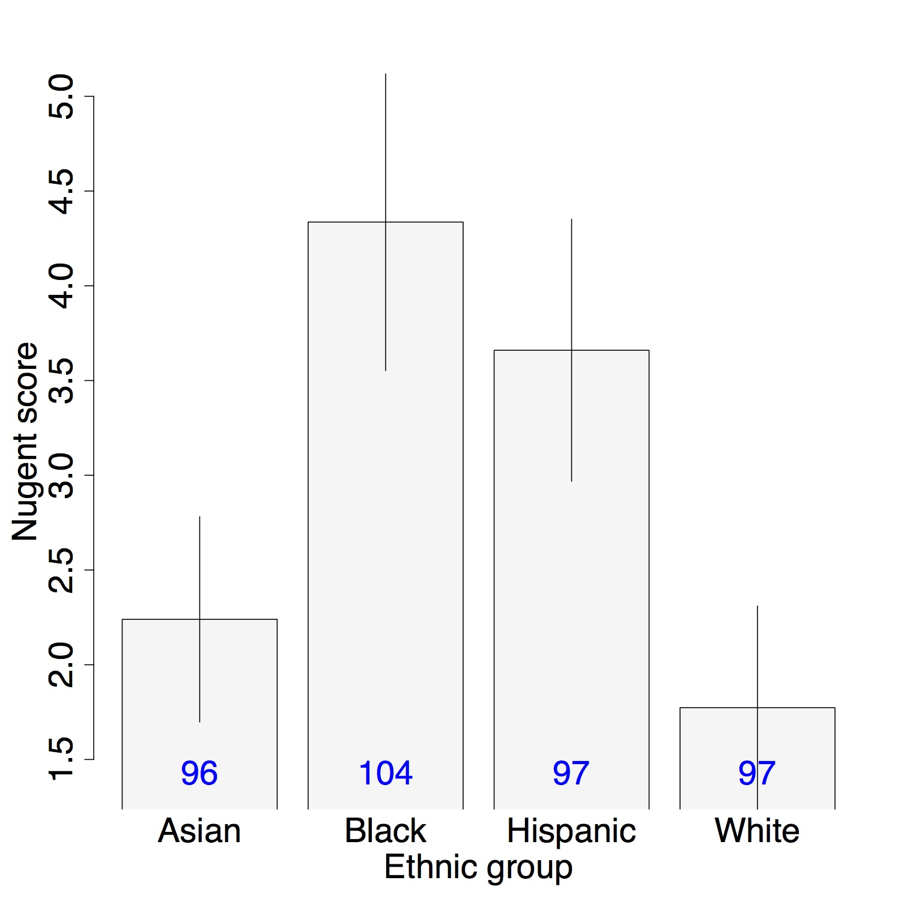

The bar plot panel displays a bar plot using variables selected in the sidebar. The value variable defines the height of the bars. The bar variable defines the bar categories. The number of samples represented by each bar is shown in blue. Error bars show 95% confidence intervals, assuming that the samples are independent and normally distributed. NA values are removed from the analysis.
The bar variable may be reduced to categories by selecting 'Categorize bar variable'. This option breaks the bar variable into categories of equal width. This makes it possible to generate reasonable bar plots from continuous variables.
Bar plots are often helpful for visualizing differences between groups. One type of samples may differ from another type of samples in some way. For example, in the Ravel et al. dataset it may be useful to determine whether samples from different ethnic groups have different Nugent scores on average.
graphics::barplot - generate barplot